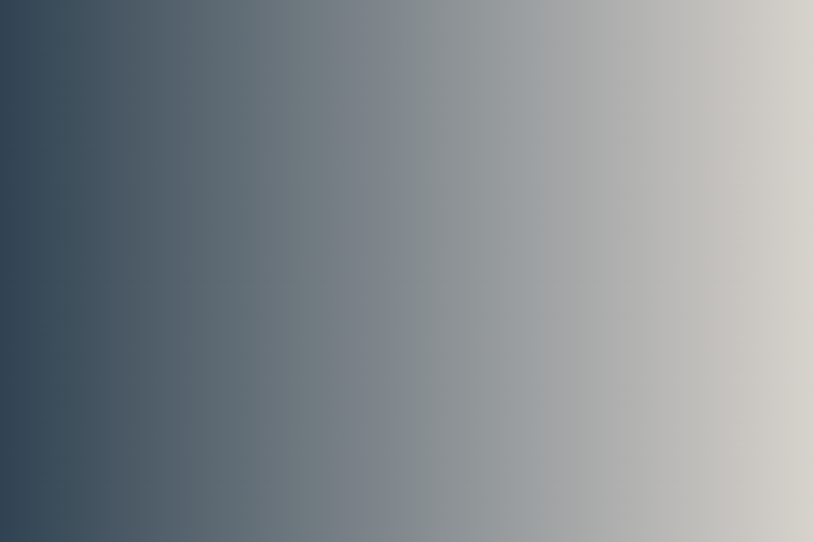

Different type in a statement.
My name is Hege Refsnes.
My name is Hege Refsnes.
This is a paragraph.
This is a paragraph.
This is a paragraph.
This is a paragraph.
This is paragraphs
这是一个类为ex的段落。文本是蓝色的
2022年11月6日
“当我年轻的时候，我梦想改变这个世界；当我成熟以后，我发现我不能够改变这个世界，我将目光缩短了些，决定只改变我的国家；当我进入暮年以后，我发现我不能够改变我们的国家，我的最后愿望仅仅是改变一下我的家庭，但是，这也不可能。当我现在躺在床上，行将就木时，我突然意识到：如果一开始我仅仅去改变我自己，然后，我可能改变我的家庭；在家人的帮助和鼓励下，我可能为国家做一些事情；然后，谁知道呢?我甚至可能改变这个世界。”
注意：重置浏览器窗口大小查看"justify"
链接到: runoob.com
This is uppercase text
This is lowercase text
This is capitalizee text
In my younger and more vulnerable years my father gave me some advice that I've been turning over in my mind ever since. 'Whenever you feel like criticizing anyone,' he told me, 'just remember that all the people in this world haven't had the advantages that you've had.'
这是一个标准行高的段落。
这是一个标准行高的段落。
大多数浏览器的默认行高约为110%至120%。
这是一个更小行高的段落。
这是一个更小行高的段落。
这是一个更小行高的段落。
这是一个更小行高的段落。
这是一个更大行高的段落。
这是一个更大行高的段落。
这是一个更大行高的段落。
这是一个更大行高的段落。
默认对齐的图片
文字顶部对齐的图片
文字底部对齐的图片
注意： Internet Explorer 9 以及更早的浏览器不支持 text-shadow 属性。
这是一个段落,正常。
这是一个段落,斜体。
这是一个段落,斜体。
This is a paragraph.
允许在 Internet Explorer 9, Firefox, Chrome, Opera, 和 Safari 中通过缩放浏览器调整文本大小。
注意:这个例子在 IE9之前的版本不工作, prior version 9.